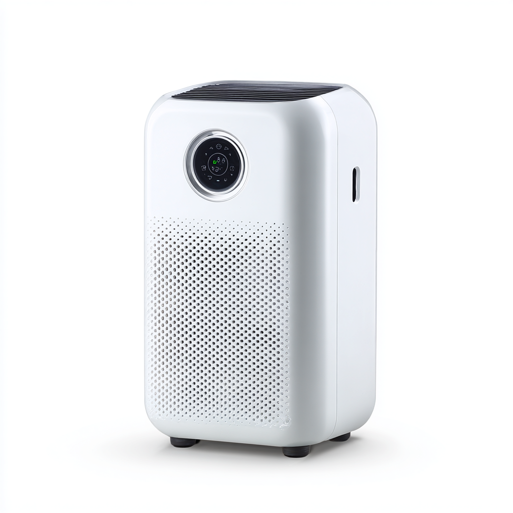
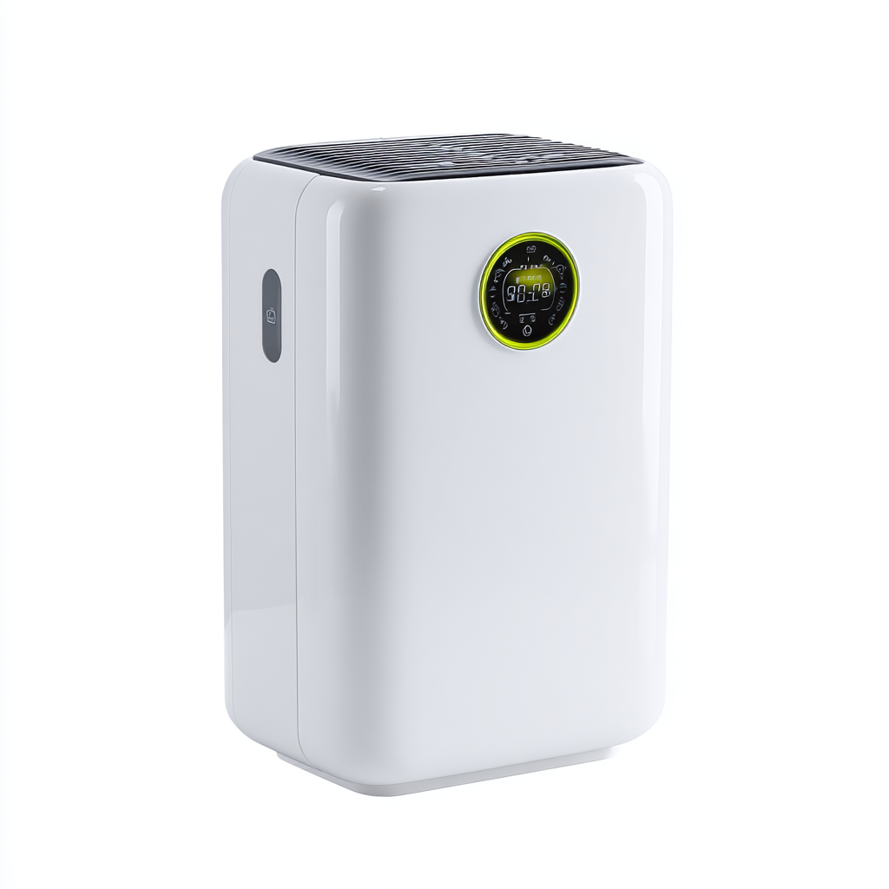

一人暮らしを始めたばかりの方や、すでに生活している方の中には「空気清浄機って本当に必要？」と感じる方も多いかもしれません。しかし、現代の生活環境を考えると、空気清浄機は決して贅沢品ではなく、毎日の健康を守るために欠かせないアイテムになりつつあります。
特に一人暮らしの部屋は、6〜10畳程度のワンルームや1Kが多く、空間が限られているため、花粉・ハウスダスト・PM2.5・ペットの毛・タバコの煙・料理の臭いなど、さまざまな汚染物質が部屋の中に溜まりやすい構造になっています。換気をこまめに行えればよいのですが、季節によっては窓を開けることで逆に花粉や排気ガスが入り込んでしまうこともあります。
また、一人暮らしの方は帰宅が遅くなりがちで、疲れた状態で生活する時間が増えるため、免疫力が低下しやすく、空気環境の悪化が体調に直結しやすいというリスクもあります。さらに、近年ではウイルス対策への意識も高まっており、HEPAフィルター搭載の空気清浄機は微細なウイルスや菌の除去にも効果を発揮するとされています。睡眠の質向上にも清潔な空気は大きく貢献します。一人暮らしだからこそ、自分の健康を守るために空気清浄機への投資は非常にコストパフォーマンスが高いと言えるでしょう。
本記事では、一人暮らしの部屋にぴったりなコンパクトサイズで、価格・性能・デザインのバランスが取れた空気清浄機を4機種厳選してご紹介します。選び方のポイントもあわせて解説しますので、ぜひ参考にしてください。

🏆 編集部イチ推しシャープが誇る独自技術「プラズマクラスター25000」を搭載したハイスペックモデルです。空気中に漂うウイルス・菌・カビ・花粉・ハウスダストを強力に分解・除去するだけでなく、肌や髪に潤いを与える効果も期待できます。適用床面積は最大25畳と余裕のあるスペックで、一人暮らしの部屋であれば短時間で清浄が完了します。脱臭機能も優秀で、料理の臭いやペットの臭いにも対応。「自動おそうじ」機能でフィルターの目詰まりを自動的に解消するため、メンテナンスの手間が少ない点も一人暮らしには大きな魅力です。スリムなデザインで設置場所を選ばず、LEDパネルの光が控えめで就寝中も気になりません。静音時の運転音は約13dBと非常に静かで、眠りを妨げずに24時間稼働させることができます。
価格帯：35,000円前後
Amazonで見る
💰 コスパ最強パナソニックの空気清浄機の中でも特にコスパに優れたモデルです。独自技術「ナノイーX」を搭載し、花粉・PM2.5・カビ菌・ウイルスの抑制に高い効果を発揮します。適用床面積は最大23畳で、一人暮らしの6〜10畳程度の部屋なら短時間で空気をきれいにすることができます。ダブルキャッチャー構造により、プレフィルター・集じんフィルター・脱臭フィルターの3層で汚れをしっかりキャッチ。「エコナビ」機能が人の在不在を検知して自動で運転を最適化するため、無駄な電力消費を抑えられます。タッチパネル操作